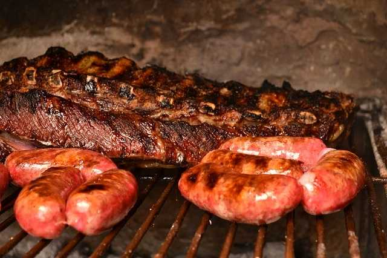

Barbecue

This is a delicios dish to prepare for your friends on a sunday and have a great time together!. This could be perfectly for lunch or just dinner if you wish
Let's start cooking!
What you are going to need for these recipe
- firewood
- grill
- the old newspaper or any kind of paper
- a lighter to set the fire
Ingredients
- beef
- chorizo (spicy pork sausage)
- blood sausage
- salt
- pepper
Steps
- Set up the fire
- salt the beef and add a little of pepper (chorizos and blood sausage are not neccesary)
- Once the ember are ready you can add the beef on top of the grill